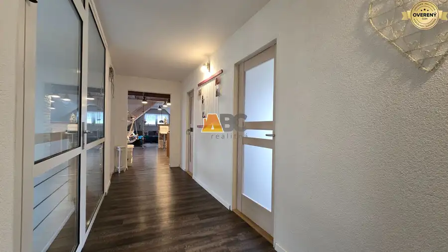
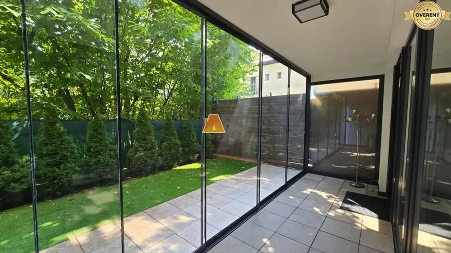

Na predaj Rodinný dom -rezort - Banská Bystrica 4500m2
Slovenská Ľupča
- Dispozícia9-izbový
- Plocha640 m²
- Stavúplne prerobený
- Vlastníctvoosobné
O nehnuteľnosti
Rodinný
dom
na predaj
Banská
Bystrica
.
Exkluzívna
Rezidencia
pod Majestátnym Lupčianskym Hradom: Váš Súkromný Raj s Nekonečnými Možnosťami
Objavte jedinečnú príležitosť vlastniť klenot v srdci Slovenska – rozsiahlu rodinnú rezidenciu, ktorá sa rozprestiera na takmer 5000 m² pozemku priamo pod historickým Lupčianskym hradom. Táto nehnuteľnosť nie je len
domovom
, je to životný štýl, investícia a útočisko, ktoré ponúka bezkonkurenčné súkromie a luxus.
Váš Súkromný Rezort na Dosah Ruky:
Na tomto výnimočnom pozemku nájdete už vybudovaný bazén, ktorý je ideálny pre relax a letné osvieženie. Vedľa neho sa otvára priestor pre realizáciu vášho vlastného tenisového kurtu, čím sa rezidencia premení na súkromné športovisko. K dispozícii je aj očarujúci záhradný domček a útulné posedenie pri unikátnej vínnej pivnici, majstrovsky vytesanej priamo do svahu – skutočný klenot pre znalcov a milovníkov dobrého vína.
Flexibilita
a
Potenciál
:
Okrem hlavného domu sa na pozemku nachádza samostatný menší domček, ktorý slúžil na
ubytovanie
návštev. Táto nezávislá jednotka je ideálna pre viacgeneračné bývanie, poskytuje súkromie pre dospelé deti alebo rodičov, alebo môže slúžiť ako lukratívny priestor na
prenájom
, generujúci dodatočný príjem.
Rozsiahly
pozemok
je možné dokonca rozdeliť na dve samostatné parcely, každá s vlastným prístupom, čo otvára dvere pre budúci rozvoj alebo investíciu.
Kúzlo
Lokality
a Nekompromisný
Komfort
:
Nehnuteľnosť sa nachádza na konci slepej ulice, čo zaručuje absolútne ticho, minimálnu dopravu a nerušené užívanie. Každý deň si vychutnáte romantické výhľady na majestátny Lupčiansky hrad, ktorý je národnou kultúrnou pamiatkou a symbolom histórie.
Slovenská Ľupča,
vzdialená
len 10 km od Banskej Bystrice, ponúka komplexnú infraštruktúru a výbornú dostupnosť, spájajúc pokoj vidieka s výhodami mestského života.
Okolie
je obklopené prírodnými rezerváciami ako Šupín, Príboj a Mackov Bok, ktoré lákajú na nenáročné túry a
outdoorové
aktivity
.
Táto rezidencia je ideálna pre náročných klientov, ktorí hľadajú exkluzívne bývanie, priestor pre viacgeneračnú
rodinu
, alebo prestížnu investíciu s významným potenciálom zhodnotenia.
Nenechajte si ujsť túto jedinečnú príležitosť!
Viac informácií, vrátane virtuálnej prehliadky, ako aj dohodnutie osobnej obhliadky, nájdete na ABC realitná.sk
alebo nás kontaktujte na telefónnom čísle .
Parametre
| Rozloha pozemku | 4661 m² |
|---|---|
| Zastavaná plocha | 1024 m² |
| Celková rozloha | 4661 m² |
| Úžitková plocha | 640 m² |
| Počet poschodí | 3 |
| Počet izieb | 9 |
| Vlastníctvo | osobné |
| Stav | úplne prerobený |
| Odvoz odpadu | áno - separovaný |
| Voda | verejný vodovod |
| El. napätie | 230/400V |
| Plyn | áno |
| Internet | lokálny poskytovateľ |
| Kúpeľňa | vaňa a sprchovací kút |
| Vykurovanie | vlastné - plyn |
| Balkón | áno - 2 |
| Terasa | áno - 2 |
| Pivnica | áno |
| Garáž | áno |
| Parkovanie | vlastné vyhradené |
| Inžinierske siete | áno |
| Postavené z | tehla |
| Zariadenie | zariadený |
| Zateplený objekt | áno |
| Strecha | po rekonštrukcii |
| Bazén | exteriérový |
| Krb | áno |
| Okná | drevené |
| Terén | rovina |
| Prístupová cesta | asfaltová cesta |
| Dátum zverejnenia | 24. 6. 2025 |
Kde to je
Mohlo by Vás zaujímať

Rodinné domy10 1 000 €Sliač na prenájom Byt v Rodinnom dome Sliač 3-izbový100 m² Bývanie s atmosférou: Priestranný podkrovný byt (100 m²) v kúpeľoch Sliač Realitná kancelária ABC realitná vám exkluzívne ponúka na prenájom…
Byt10 Cena dohodouNa prenájom exkluzívny byt s terasou vo Zvolene Zvolen 2-izbový61 m² EXKLUZÍVNE NA PRENÁJOM: Luxusný 2-izbový byt s veľkou terasou so záhradou a garážou v centre Zvolena . ABC realitná vám exkluzívne ponúka na prenájom…